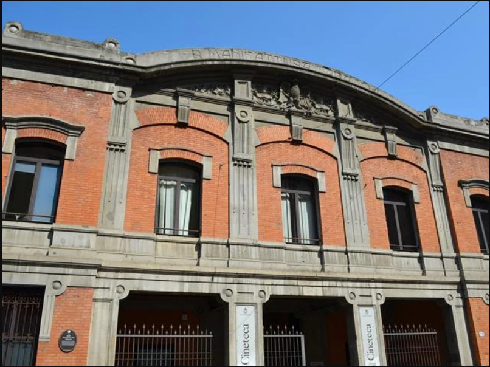

L'ex Manifattura Tabacchi di Via Riva di Reno a Bologna è un luogo di grande interesse storico e architettonico, con una nuova vita legata alla cultura. Ecco le informazioni principali, insieme a dettagli sulla sua storia e il suo aspetto attuale:
Storia e Architettura
Indirizzo: Via Riva di Reno, 72, Bologna.
Origini: La Manifattura dei Tabacchi fu installata all'inizio dell'Ottocento nell'area che era l'ex convento di Santa Maria Nuova.
Ristrutturazione del 1906: L'edificio principale su Via Riva di Reno, dove un tempo scorreva il canale (ora coperto al centro della strada), conserva la facciata storica che fu totalmente riprogettata nel 1906 dall'architetto Gaetano De Napoli.
Stile Liberty: La facciata è un notevole esempio dello Jugendstil (stile Liberty/Art Nouveau), con una struttura e decorazioni che riflettono il gusto dell'epoca.
Forza Lavoro: Storicamente, la Manifattura impiegava prevalentemente donne, considerate più abili degli uomini nell'arrotolare le foglie di tabacco per confezionare i sigari.

[SPLIT_BLOCK:manifattura_facciata.jpg];
Stato Attuale e Nuova Funzione
Oggi, l'area dell'ex Manifattura fa parte di un importante progetto di recupero architettonico-urbanistico noto come **Manifattura delle Arti**.
Cineteca di Bologna: L'edificio storico su Via Riva di Reno è l'attuale sede della Cineteca di Bologna, un polo culturale di rilievo internazionale per la conservazione e la promozione del cinema.
Giardini: Vicino all'ex Manifattura si trovano anche i Giardini ex Manifattura Tabacchi, un'area verde aperta al pubblico (generalmente con orari 7:00-19:00), spesso frequentata da famiglie e dotata di un'area giochi per bambini.
Link e Contenuti Aggiuntivi (Foto)
Per le foto, il modo migliore è consultare le risorse online che documentano l'edificio storico e i progetti di recupero:
Ex Reale manifattura dei Tabacchi - Bologna Online
Manifattura Tabacchi - Storia e Memoria di Bologna
Ti consiglio in particolare di cercare le immagini della facciata su Via Riva di Reno, che è la parte meglio conservata e più caratteristica dell'architettura Liberty. Se fossi interessato specificamente alle foto scattate all'interno delle aree dismesse prima del recupero (spesso con un'atmosfera di archeologia industriale), dovresti cercare mostre o progetti come quello citato nell'articolo: "Spazi prossimi. Ex Manifattura Tabacchi. Percorso fotografico verso il recupero" di Ivano Adversi.